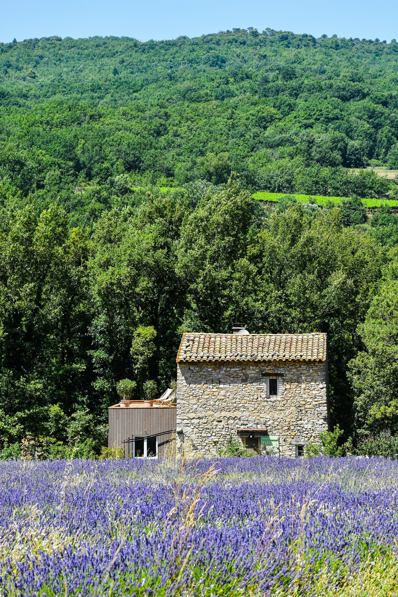
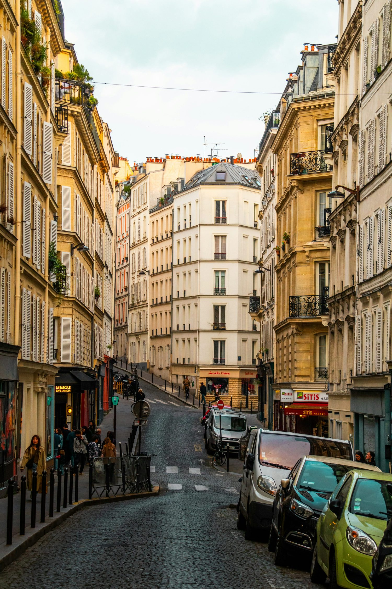

远方
侧写
人人都拍正面，
我们绕到背面去。
一座教堂、一片花田、一条老街——被拍过一万次的东西，还有另一半没人看见。这里只写那一半。
蒙马特 · 巴黎从这个缝里看圣心堂
主张
不写攻略，也不推荐打卡点。
只做一件事：
把镜头从正面挪开。
移到背面、侧面、门里面、围墙外，移到本地人真正生活的那一侧。风景的另一面，往往才是它本来的样子——脚手架、后门、堆货的角落、晒黑的手臂，比修好的立面更诚实。
五个视角同一处风景，换五个位置看
背面
宣传照永远不拍的那一面：脚手架、后门、堆货的墙角。
侧面
离开中轴线，从旁边看过去，比例和关系才露出来。
内部
走进去。门里的四十平米，比门外的立面更诚实。
细节
一块褪色的招牌、一道磨掉的漆，比全景更能说明这是哪儿。
围墙之外
景区围墙外面那条街，才是这个地方的日常。
侧写档案已发布的几篇，从背面开始

正在拍
- 围墙之外一座著名园林的围墙外面，那条没有名字的巷子。
- 内部走进地标楼里的公共走廊，看它工作日的四十平米。
- 细节同一块招牌，四十年里被换过几次漆。
互动 · 不用理由
点一下，就当你也绕到了背面。
每点一次，翻出一句背面笔记，随机翻，不重上一句。它不上排行榜，只记在这台设备上。
0
心动值本机累计 · 点一下加一
背面
还没点。第一下总会有点犹豫，这是正常的。
在微信里搜「远方侧写」
每周一篇，图文长贴。不追热点，只找一个地方的另一面。喜欢慢一点看世界的人，多半会喜欢这里。
微信搜索
远方侧写